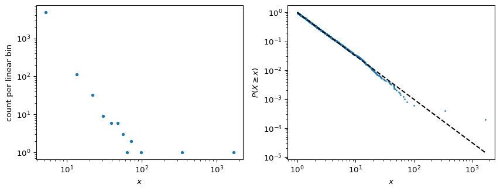

Power Laws
Module 3: Modelling with Randomness
A distribution has a fat (heavy) tail when large values are much more likely than under a Gaussian. The simplest example is the power law. This page follows (newman2005power?) and (clauset2009power?).
Definition
A continuous power law has density
\[ p(x) = \frac{\alpha - 1}{x_{\min}} \left( \frac{x}{x_{\min}} \right)^{-\alpha}, \qquad x \ge x_{\min}, \tag{1}\]
with \(\alpha > 1\) so that it can be normalized. Its complementary cumulative distribution function (CCDF) is also a power law, with exponent one less:
\[ P(X \ge x) = \left( \frac{x}{x_{\min}} \right)^{-(\alpha - 1)} . \tag{2}\]
The mean is finite only if \(\alpha > 2\) and the variance only if \(\alpha > 3\) (newman2005power?). For \(1 < \alpha \le 3\) the sample variance never settles, however much data you collect.
Pareto, Zipf and the same law
Pareto’s law is a statement about the CCDF: the fraction of people with wealth above \(x\) decays as a power of \(x\). Zipf’s law is a statement about ranks: the \(r\)-th most frequent word appears with frequency proportional to \(r^{-s}\). A rank plot is the CCDF with the axes swapped, so both are power laws for the same data (newman2005power?).
Log-log plots and their pitfalls
On log-log axes Equation 1 is a straight line with slope \(-\alpha\). That suggests fitting a line by least squares. (clauset2009power?) show that this is a poor estimator:
- A histogram with linear bins has very few counts in the tail, and its logarithm is noisy and biased.
- The least-squares fit has no valid error estimate, because the points are not independent Gaussian errors.
- A straight-looking stretch does not prove a power law. A log-normal, for instance, can look straight over several decades.
Plot the CCDF instead, which needs no binning, and estimate \(\alpha\) by maximum likelihood.
The maximum likelihood estimator
Given \(n\) observations \(x_i \ge x_{\min}\), the maximum likelihood estimate of \(\alpha\) is
\[ \hat{\alpha} = 1 + n \left[ \sum_{i=1}^{n} \ln \frac{x_i}{x_{\min}} \right]^{-1}, \qquad \sigma_{\hat{\alpha}} = \frac{\hat{\alpha} - 1}{\sqrt{n}}, \tag{3}\]
(newman2005power?; clauset2009power?). In practice \(x_{\min}\) is unknown. (clauset2009power?) choose it by minimizing the Kolmogorov-Smirnov distance between the data above \(x_{\min}\) and the fitted law, and then test the fit with a bootstrap. You meet the same estimator again as the Hill estimator in the lab.
alpha_hat, err = mle_power_law_exponent(x, xmin=1.0)
print(f"MLE: alpha = {alpha_hat:.3f} +/- {err:.3f} (true 2.5)")MLE: alpha = 2.503 +/- 0.021 (true 2.5)
Exercise
Estimate \(\alpha\) by a least-squares line through the log-log histogram of the left panel (use only bins with counts). Repeat for 200 independent samples of size 5000 and compare the mean and spread of the least-squares and MLE estimates.
Solution
rng = np.random.default_rng(3)
ls, ml = [], []
for _ in range(200):
s = sample_pareto(5000, 2.5, 1.0, rng)
c, e = np.histogram(s, bins=200)
m = 0.5 * (e[1:] + e[:-1])
keep = c > 0
ls.append(-np.polyfit(np.log(m[keep]), np.log(c[keep]), 1)[0])
ml.append(mle_power_law_exponent(s, 1.0)[0])
print(f"least squares: {np.mean(ls):.3f} +/- {np.std(ls):.3f}")
print(f"MLE: {np.mean(ml):.3f} +/- {np.std(ml):.3f}")least squares: 1.599 +/- 0.171
MLE: 2.499 +/- 0.020The least-squares estimate is strongly biased because the sparse tail bins, many with a single count, flatten the line. The MLE is centred on 2.5 with a spread close to \((\alpha - 1)/\sqrt{n} \approx 0.02\).